웹 상에서 프로그래밍을 도와주는 온라인 IDE는 다양하게 존재한다. Visual Studio, Android Studio, Eclipse 등과 같이 확실한 로컬 환경 기반 IDE를 사용하지 않고 굳이 왜 온라인 IDE를 사용하는 이유는 군대와 같이 로컬 IDE를 사용하지 못하는 환경이거나, 복잡한 설치 없이 가볍게 소스코드를 돌려보고 싶다는 등 다양한 사정이 있을 것이다.
한국에서 개발한 대표적인 온라인 IDE로 구름IDE가 존재한다. 구름IDE는 온라인 상에서 간단한 코드를 돌려 보거나 웹 프로젝트를 하기에는 매우 강력한 툴이다.
[개발환경] 구름IDE 사용 방법 정리
* 다음 포스팅은 구름 IDE 사용 방법을 정리한 것으로, 개인적인 공부 내용을 기록한 글 이기에 잘못된 내용을 포함하고 있을 수 있습니다. 자세한 구름 IDE 사용방법에 대해선 다음 공식 블로그를
novlog.tistory.com
하지만 구름IDE 뿐 만 아니라 온라인 IDE는 Dart 언어와 Flutter 프레임워크를 지원하지 않는 경우가 대부분 이었다. 그렇기에 온라인 상에서 별도의 설치 없이 Dart 언어를 이용한 Flutter 개발을 하고 싶다면 앞으로 소개할 온라인 IDE를 사용해 보는 것을 추천한다.
#DartPad
DartPad는 온라인 상에서 간단한 Dart 코드를 실행해 볼 수 있는 IDE이다. https://dartpad.dev 로 접속하면 바로 사용 가능하다.
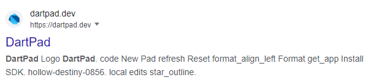
DartPad를 실행시키면 for문을 이용해 1~5 사이의 숫자를 출력하는 간단한 코드와 함께 깔끔한 UI로 구성된 IDE가 보인다.
구성은 3단 구조로 이루어져 있다.
좌측은 코드를 작성하는 부분이며, Run 버튼을 누르면 우측 Console 영역에 실행한 코드가 출력된다.

또한 print 함수를 클릭해 보면 우측 하단 Documentation 영역에 print 함수에 대한 설명이 출력된다.
이처럼 Documentation 영역에서 메서드에 관한 다양한 레퍼런스를 얻을 수 있다.
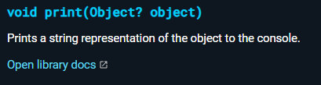
상단의 메뉴를 살펴보자. Reset을 누르면 작성한 코드가 초기화되며, Format을 누르면 작성한 코드를 형식에 맞게 이쁘게 정렬해 준다.
NewPad를 누르면 Dart형식의 파일을 생성할 것인지, Flutter 프레임워크를 이용한 파일을 생성할 것인지 선택하는 창이 출력된다.
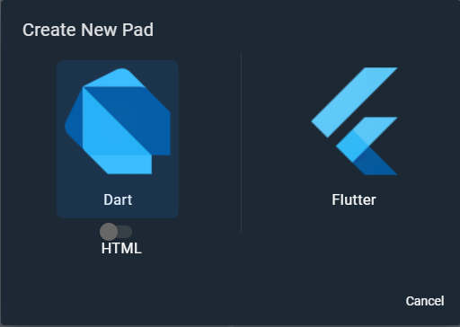
Flutter를 선택한 뒤 우측 상단의 Samples → Counter를 클릭해 보면 다음과 같이 카운트를 해주는 간단한 Flutter 어플리케이션 코드가 작성된다.
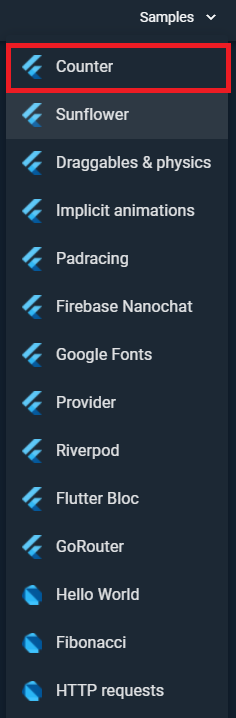 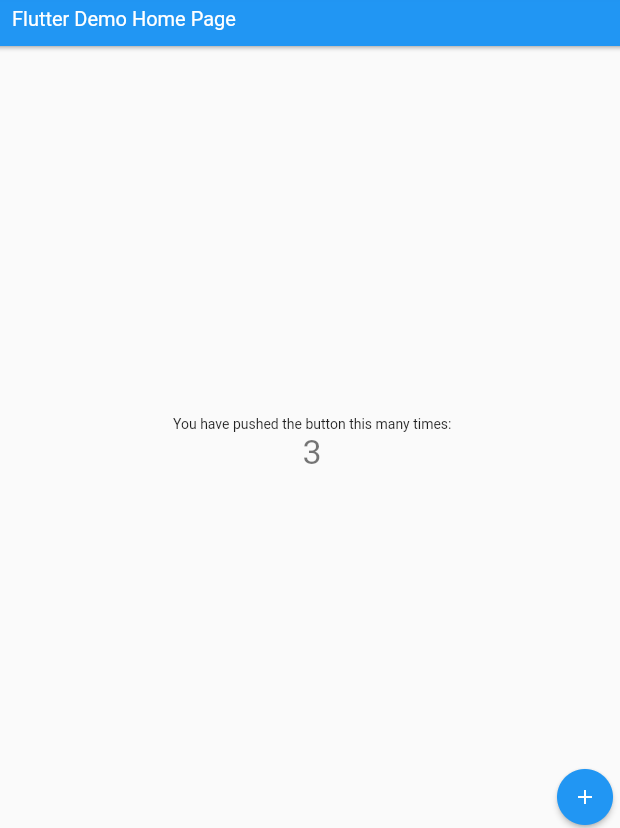
DartPad는 사용하기에 군더더기 없이 매우 간편하지만 Flutter Framework를 이용해 개발을 하는 것은 약간 무리가 있다.
소스코드별로 따로 파일을 분리할 수 없다는 단점을 가지고 있기에, 한 개의 소스코드에 모든 Flutter 코드를 작성해야 한다.
간단한 페이지의 UI를 작성하는 정도라면 모를까 실제로 어플리케이션을 개발 하기에는 적합하지 않다.
하지만 Dart 언어의 연습 용도로는 이만한게 없다고 생각한다.
#FlutLab
FlutLab은 Flutter 개발을 위한 온라인 IDE로 DartPad와 달리 코드를 여러개의 파일로 분리하여 작성할 수 있으며 자동완성과 같은 사용자 편의 기능이 다수 존재하기에 Flutter 어플리케이션 개발에 아주 적합하다.
FlutLab.io - Flutter IDE online
Ideal tool for mobile development Modern developers will find their favorite coding toys here! Autocompletion, quick Flutter docs, GitHub, hot preview just to start counting...
flutlab.io
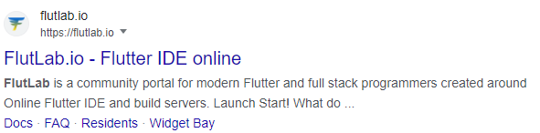
단, 계정은 꼭 생성해 주는 것을 추천한다. 로그인 없이 사용할 수 있지만 많은 제약이 있다.
무료 계정은 250MB의 저장소와 2개의 프로젝트를 생성할 수 있다.
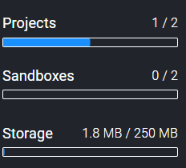
우측 상단의 +Project 버튼을 클릭하면 Create Project 창이 출력된다. 생성할 Project의 정보를 입력한 뒤 Create를 눌러보자.
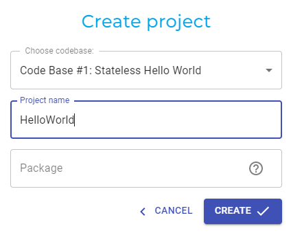
그러면 다음과 같이 프로젝트가 하나 생성된다.
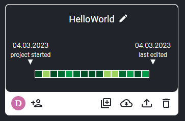
거의 Android Studio와 동일한 UI로 구성되어 있다. 좌측 상단의 파란색 플레이 버튼을 누르면 소스코드 빌드가 실행된다.
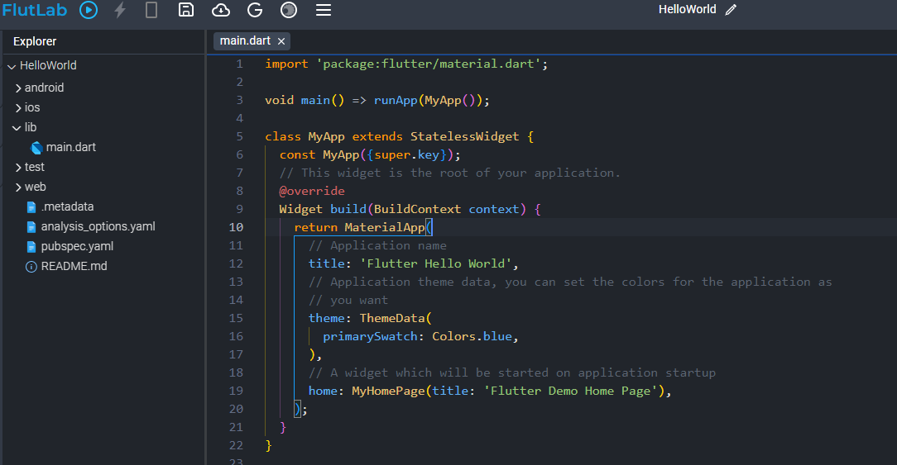 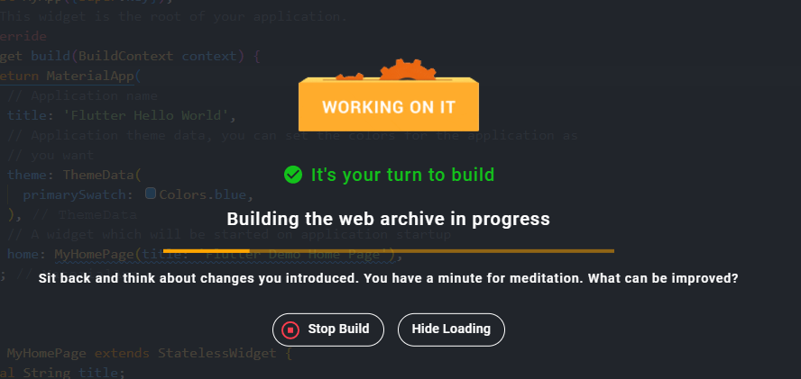
빌드가 끝나면 아래와 같이 스마트폰 에뮬레이터가 실행된다. 솔직히 온라인 상에서 별도의 설치 없이 이정도 까지 가능하다니 놀라울 따름이다.
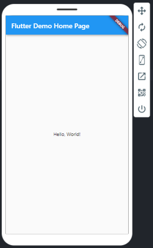
먼저 무료 플랜을 사용해 보고 괜찮다고 생각하면 유료 플랜을 사용해 보는 것을 추천한다.